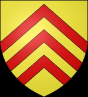
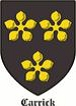

1502221 Princess Marjorie Bruce
* 1296 Dundonald Castle, Ayrshire, Scotland
† 1316-03-02 Paisley, Scotland
Prinsessa av Scotland
Blev högst 20 år
* 1296 Dundonald Castle, Ayrshire, Scotland
† 1316-03-02 Paisley, Scotland
Prinsessa av Scotland
Blev högst 20 år

3004442 King Robert I (Bruce VII, Earl of Carrick) of Scotland
* 1274-07-11 Scotland
† 1329-06-07 Cardross, Scotland
Konung av Scotland
Blev 54 år
* 1274-07-11 Scotland
† 1329-06-07 Cardross, Scotland
Konung av Scotland
Blev 54 år

6008846 Sir Robert de Bruce, Lord of Annandale & Earl of Carrick
* omkring 1243 Writtle, Essee, England
† före 1304-04 England
Lord, Greve
Blev ca 61 år
* omkring 1243 Writtle, Essee, England
† före 1304-04 England
Lord, Greve
Blev ca 61 år
12017692 Lord Robert de Bruce, Lord of Annandale
* 1215 Annandale, Dumfriesshire, Scotland
† 1295-03-31 Lochmaben Castle, Dumfriesshire, Scotland
5:te Lorden av Annadale
Blev högst 80 år
* 1215 Annandale, Dumfriesshire, Scotland
† 1295-03-31 Lochmaben Castle, Dumfriesshire, Scotland
5:te Lorden av Annadale
Blev högst 80 år

12017693 Isabella of Gloucester & Hertford
* 1226-11-08 Tewkesbury, England
† 1264-07-10 England
Blev 37 år
* 1226-11-08 Tewkesbury, England
† 1264-07-10 England
Blev 37 år

6008847 Countesse Majorie of Carrick
* omkring 1252 Carrick, Argyll, Scotland
† 1292-11-09 Carrick, Argyll, Scotland
Grevinna av Carrick
Blev ca 40 år
* omkring 1252 Carrick, Argyll, Scotland
† 1292-11-09 Carrick, Argyll, Scotland
Grevinna av Carrick
Blev ca 40 år

3004443 Lady Isabella av Mar
* 1277 Kildrummy castle, Scotland
† 1296-12-12 Cardross, Scotland
Blev högst 19 år
* 1277 Kildrummy castle, Scotland
† 1296-12-12 Cardross, Scotland
Blev högst 19 år
6008886 Donald Mormaer, 8:e Earl av Mar
* omkring 1243 Kildrummy castle, Scotland
† mellan 1297 och 1302 Kildrummy castle, Scotland
Blev ca 58 år
* omkring 1243 Kildrummy castle, Scotland
† mellan 1297 och 1302 Kildrummy castle, Scotland
Blev ca 58 år
6008887 Prinsessan Elen Verch Llywelyn
* 1243 Caernarvonshire, Wales
† 1295-02 Kildrummy castle, Scotland
Prinsessa
Blev högst 52 år
* 1243 Caernarvonshire, Wales
† 1295-02 Kildrummy castle, Scotland
Prinsessa
Blev högst 52 år
12017774 Prins Gruffudd ap Llywelyn
* omkring 1190 Wales
† 1244-03-01 Wales
Prins
Blev ca 54 år
* omkring 1190 Wales
† 1244-03-01 Wales
Prins
Blev ca 54 år
12017775 Lady Serena of Anglesey
* 1214 Wales
† 1277 Wales
Blev högst 63 år
* 1214 Wales
† 1277 Wales
Blev högst 63 år